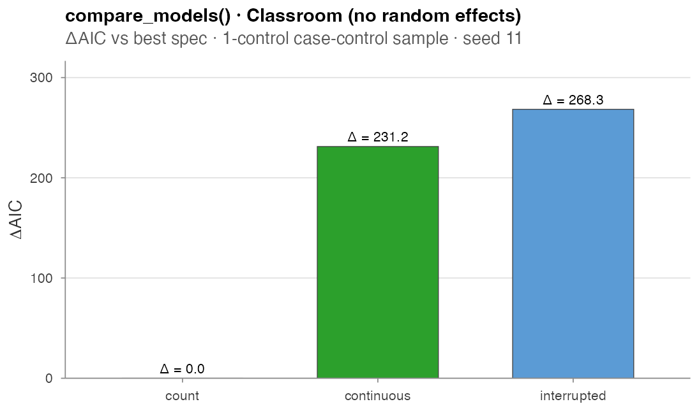
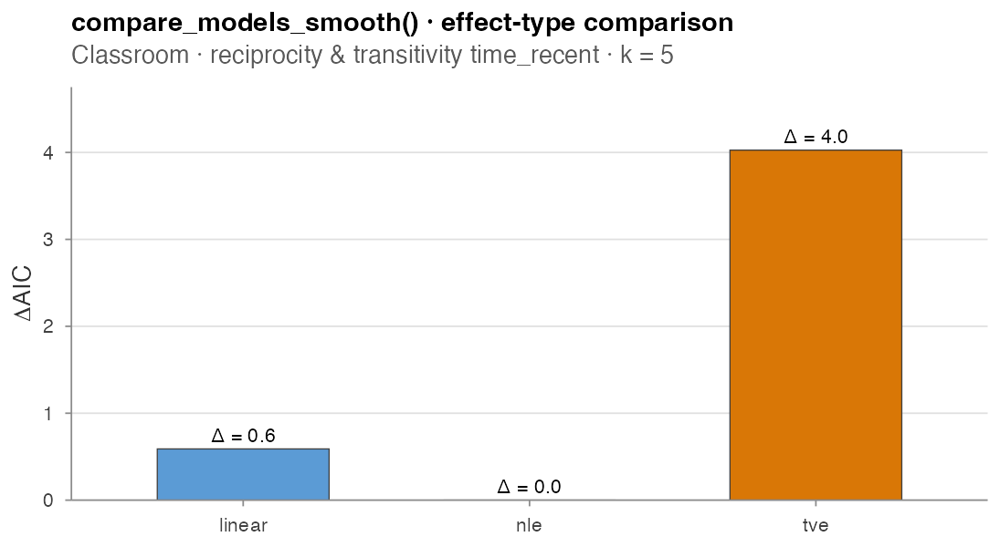
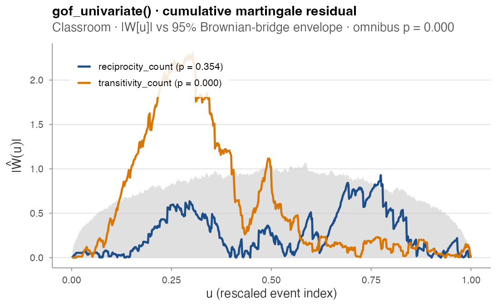
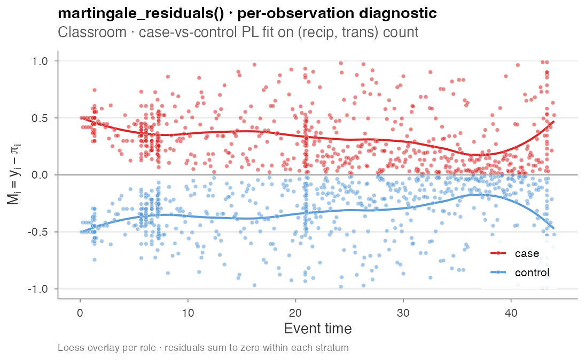

Estimation
amore’s estimation surface has these layers:
-
Case-control sampling turns a raw event log into a
stratified table that survival / GLM tools can fit directly
(
sample_non_events();widen_case_control()reshapes it to the wide case-1-control form). -
rem()— the unified fitter for (already preprocessed) case-control data: a conditional-logit backend for case-k-control designs and agambackend for case-1-control, with linear / TV / NL / TVNL effects andsummary()/coef()/plot()methods. -
compare_models*helpers evaluate a list of candidate specifications on a single sample and return a tidy AIC table (superseded byrem(), still supported). - Goodness-of-fit tests check whether the selected fit is actually adequate.
Every numerical output below is produced by
paper/wiki/experiments/est_demo.R, which is re-run on every
release of the wiki.
Case-control sampling
The partial likelihood for a relational event model factors over
events, with each factor a ratio between the firing dyad’s rate and the
sum of rates over the risk set at that moment. The case-control
approximation replaces the full risk set sum with an unbiased
Horvitz-Thompson estimate that uses n_controls sampled
non-firing dyads per case.
Throughout this page we use the bundled classroom_events
log — any event log with time, sender,
receiver columns will do.
library(amore)
data(classroom_events)
cc <- sample_non_events(classroom_events,
n_controls = 1,
scope = "all",
mode = "one")scope selects which non-firing dyads form the candidate
pool ("all", "appearance", or
"citation"); mode selects the sampling design
("one" matched-set or "two" permuted).
Risk-set exclusions. Two further controls keep
ineligible dyads out of the candidate pool. exclude_pairs
is a two-column (sender, receiver) table of dyads that are
structurally ineligible — e.g. an alien species’ native range,
forbidden transitions, same-department pairs — and are never sampled as
controls. And under risk = "remove", a dyad firing at the
focal event’s own timestamp is now treated as a concurrent event (not a
valid non-event at that instant) and excluded from its control pool:
cc <- sample_non_events(event_log,
scope = "all",
mode = "two",
risk = "remove", # drops past + concurrent
exclude_pairs = native[, c("species", "region")])For n_controls = 1 the estimator is a no-intercept
binomial GLM on case-minus-control differences (asymptotically
equivalent to the case-control partial likelihood for 1:1 matched
designs). For n_controls > 1 it is a stratified Cox
model via survival::coxph (the same machinery
survival::clogit calls internally). AIC values are
comparable across specifications that share a case-control draw.
To compute endogenous covariates for the sampled non-events
without letting them enter the event history, pass the true
event log as history_log to
compute_endogenous_features() — only rows present in
history_log update the running network state.
For set-valued covariates, the "sender_receivers_set"
statistic returns a list-column: for each row, the set
of receivers the row’s sender has reached before it (e.g. the regions a
species has already invaded). It honours history_log too,
so it is correct for non-events. Downstream, you join it to an external
lookup to build the actual covariate:
feats <- compute_endogenous_features(cc, stats = "sender_receivers_set",
history_log = event_log)
feats$invaded <- Map(setdiff, feats$sender_receivers_set, native_range(feats$sender))
feats$dt <- mapply(min_climatic_diff, feats$invaded, feats$receiver, feats$time)
rem() · unified fitter for preprocessed data
When the covariates have already been computed — e.g. by eventnet
or by compute_endogenous_features() — rem()
fits the model directly from the case-control table, decoupling fitting
from feature computation. It has three backends:
-
method = "clogit"— conditional logistic regression on a case-k-control design (survival::clogit). Strata come fromstratum, or are derived ascumsum(case == 1)for the eventnet blocked layout. Linear terms only. -
method = "nn"— a neural conditional-logistic model on the same case-k-control design asclogit: a multilayer perceptron scores every candidate and the loss is the softmax over each risk set, i.e. exactly the conditional partial likelihood with a learned nonlinear intensity in place of the linear predictor. Prediction-oriented — no coefficient table; it earns its keep when effects interact or bend in ways an additive model cannot capture. Pure R, no extra dependencies. -
method = "gam"— degenerate logistic regression on a case-1-control design (mgcv::gam), supporting smooth effects. In the formula a bare name is a linear effect; wrap it astv(x),nl(x)ortvnl(x)for a time-varying, non-linear, or time-varying-non-linear smooth, orre(x)for an actor (or other grouping) random effect —s(cbind(x_ev, x_nv), by = c(1, -1), bs = "re"), the matched event/control random effect (identified when the event and control differ onx).
# case-20-control conditional logit (e.g. an eventnet-preprocessed log)
fit20 <- rem(IS_OBSERVED ~ individual.activity + dyadic.activity,
data = lesmis, method = "clogit", stratum = "EVENT_INTERVAL")
coef(fit20); summary(fit20)
# case-1-control degenerate logistic with a non-linear effect
w <- widen_case_control(lesmis, stratum = "EVENT_INTERVAL")
fit1 <- rem(~ nl(dyadic.activity), data = w, method = "gam")
plot(fit1) # the fitted smooth panel
# neural conditional logit on the same long case-control log
fitnn <- rem(IS_OBSERVED ~ individual.activity + dyadic.activity,
data = lesmis, method = "nn", stratum = "EVENT_INTERVAL",
nn = nn_control(hidden = c(16, 8), epochs = 300, seed = 1))
summary(fitnn) # architecture, in-sample & held-out concordance
plot(fitnn$fit, type = "pdp") # learned per-feature effect curvesThe nn backend is trained full-batch with Adam,
early-stops on a held-out fraction of strata
(nn_control(validation = , patience = )), and standardizes
features internally. logLik() returns the partial
likelihood at the trained network, so AIC()-style
comparisons against clogit fits are possible (with the
usual caveats about effective degrees of freedom for neural networks).
Because it shares the case-control machinery, everything upstream —
sample_non_events(), feature engineering, stratum handling
— is identical to the other backends.
widen_case_control() reshapes a long case-(k-)control
log into the wide <cov>_ev /
<cov>_nv / d_<cov> form the
gam backend expects (one row per case). Undirected logs
(set-valued senders, no receiver column) are supported throughout.
Column resolution follows the eventnet conventions (x,
d_x, x_ev/x_nv,
transform_x_*, transformed_time).
rem() supersedes compare_models() /
compare_models_smooth() /
compare_models_global(), which remain available and are
documented below.
compare_models() · linear AIC table
A single call evaluates a list of candidate specifications on a shared case-control sample:
data(classroom_events)
compare_models(
classroom_events,
models = list(
count = c("reciprocity_count", "transitivity_count"),
continuous = c("reciprocity_time_recent",
"transitivity_time_recent"),
interrupted = c("reciprocity_time_recent_interrupted",
"transitivity_time_recent_interrupted")),
n_controls = 1, seed = 11)
#> model n_terms n_obs log_lik AIC delta_AIC
#> 1 count 2 691 -305.5233 615.0466 0.000
#> 2 continuous 2 691 -421.1231 846.2462 231.200
#> 3 interrupted 2 691 -439.6904 883.3809 268.334Runtime: 0.3 s.

Read this with caution. Without an
actor-heterogeneity correction, *_count statistics absorb
sender / receiver activity differences directly, so a spec that should
encode “how recently did this dyad fire?” reduces to “how
active is this sender?”. The naive count win is a well-known
artefact. Adding a sender frailty term flips the ranking to
continuous by ΔAIC ≈ 6, recovering Table 3 of
Juozaitienė & Wit (2024) — see Real-data analysis for the corrected
fit.
| Argument | Meaning |
|---|---|
event_log |
data frame with sender, receiver,
time
|
models |
named list of character vectors of stat names |
n_controls |
controls per case (1: GLM; > 1:
stratified Cox) |
scope, mode
|
passed to sample_non_events()
|
random_effects |
"sender" or "receiver" — see below |
half_life |
required when any spec uses an exp-decay stat |
seed |
for the shared case-control draw |
keep_fits |
if TRUE, attach the fitted models as
attr(result, "fits")
|
All three compare_models*() helpers accept
keep_fits = TRUE, which attaches the fitted model objects —
one per spec, named by model — as attr(result, "fits"), so
an individual fit can be pulled out for plotting its estimated
effects:
res <- compare_models_smooth(event_log, models, keep_fits = TRUE)
plot(attr(res, "fits")[["nl"]]) # the chosen spec's smooth panelActor random effects
compare_models() accepts
random_effects = "sender" or "receiver"
(requires n_controls > 1). Internally this injects a
Gamma survival::frailty() term on the requested actor axis
into the stratified Cox fit, matching the convention in Juozaitienė
& Wit (2024).
Two-axis frailty
(random_effects = c("sender", "receiver")) is supported via
coxme::coxme and is the right tool when both sender and
receiver heterogeneity matter; one coxme fit per spec
typically runs in seconds to a minute on Classroom-sized data. Requires
the coxme package (Suggests).
compare_models_smooth() · TV / NL / TVNL effects
Where compare_models() fits a single
coefficient per statistic, compare_models_smooth() lets
each statistic take one of four effect types: linear,
tv (time-varying), nl (non-linear in the
covariate), or tvnl (jointly time-varying non-linear via a
tensor product smooth). Implementation follows Boschi, Lerner & Wit
(2025) Section 3.3:
compare_models_smooth(
classroom_events,
models = list(
linear = c(reciprocity_time_recent = "linear",
transitivity_time_recent = "linear"),
nl = c(reciprocity_time_recent = "nl",
transitivity_time_recent = "nl"),
tv = c(reciprocity_time_recent = "tv",
transitivity_time_recent = "tv")),
seed = 11, k = 5)
#> model n_terms n_obs log_lik AIC delta_AIC
#> 1 nl 2 691 -418.3044 845.6569 0.000
#> 2 linear 2 691 -421.1231 846.2462 0.589
#> 3 tv 2 691 -420.7474 849.6835 4.027Runtime: 1.9 s.

The three specs are within 4 AIC points of each other on the recency-time terms — there is no signal in this dataset that a time-varying or non-linear effect adds value over the linear baseline. The case-vs-control matrix design behind these fits is described in detail at the bottom of this section.
| Effect | Smooth term |
|---|---|
linear |
single column d_stat = case − control
|
tv |
s(.time, by = d_stat) |
nl |
s(stat_mat, by = I_mat) with
stat_mat = cbind(case, control),
I_mat = cbind(1, -1)
|
tvnl |
te(time_mat, stat_mat, by = I_mat) |
The model is fit by mgcv::gam(method = "REML") with the
degenerate logistic likelihood from Boschi et al. equation 8. AIC values
are directly comparable across specs because every fit shares the same
case-control sample.
compare_models_global() · global covariate effects
A global covariate varies in time but is constant across all
interacting pairs at any given instant — temperature, time-of-day, the
residual baseline hazard g_0(t). Standard case-control
partial likelihood structurally cannot identify a global effect because
it cancels in the focal-vs-control rate ratio (both pairs are evaluated
at the same time). The fix of Lembo, Juozaitienė,
Vinciotti & Wit (2025) is a random per-dyad time shift
H_sr ~ Exp(rate), so the focal event and the sampled
non-event are evaluated at different times. With one non-event
per event the partial likelihood collapses to a degenerate logistic GAM
that mgcv fits directly:
g <- data.frame(time = seq(0, max(classroom_events$time), length = 50),
temperature = sin(seq(0, 2 * pi, length = 50)))
compare_models_global(
classroom_events,
models = list(
dyadic_only = c(reciprocity_count = "linear",
transitivity_count = "linear"),
with_global = c(reciprocity_count = "linear",
temperature = "global_smooth")),
global_covariates = g, seed = 11, k = 5)| Effect type | Smooth | Use |
|---|---|---|
global_smooth |
s(x_global) |
generic global covariate |
global_cyclic |
s(x_global, bs = "cc") |
periodic axes (time-of-day) |
global_time |
smooth on time itself | recovers residual g_0(t)
|
shift_scale (default 1) multiplies the mean
inter-event time used to set the exponential rate of H_sr.
Larger values widen the shifts and improve identifiability of slow
global signals at the cost of bias under fast-varying g_0.
The global_time spec can produce a degenerate fit on small
/ uninformative data — when this happens the result is NA
rather than a hard error.
Recency preprocessing
transform_recency(delta, half_life = NULL, reference = NULL)
maps non-negative inter-event time gaps to bounded weights via
exp(-delta / (2 m)), with m the median of the
supplied (or reference) gaps. Default median rule sends zero → 1 and the
median gap → exp(-1/2) ≈ 0.607. Useful as a preprocessing
step for global / exogenous covariates fed into
compare_models_global().
Goodness-of-fit · cumulative martingale residual tests
amore implements the four GOF tests of Boschi & Wit
(2025) on the cumulative martingale residual process
G[γ̂, u]. After normalisation,
Ŵ[γ̂, u] = Ĵ^{-1/2} · n^{-1/2} · G[γ̂, u] converges to a
standard (multivariate) Brownian bridge under correct specification.
m <- c(reciprocity_count = "linear",
transitivity_count = "linear")
gof_univariate(classroom_events, m, "reciprocity_count", seed = 11)
#> $statistic : 0.929
#> $p_value : 0.354 # not rejected
gof_univariate(classroom_events, m, "transitivity_count", seed = 11)
#> $statistic : 2.299
#> $p_value : 0.000 # rejected -- transitivity is misspecified
gof_global(classroom_events, m, seed = 11)
#> $statistic : 3089.6
#> $p_value : 0.000 # overall model rejected
reciprocity_count’s process (blue) stays inside the 95 %
Brownian-bridge envelope; transitivity_count’s process
(orange) shoots well above the envelope around u ≈ 0.30,
where the running residual is most informative. The omnibus Cauchy
combination rejects the overall model with p < 10⁻³ —
and the per-component test pinpoints transitivity_count as
the offender. The right next move is to enrich the transitivity term
(try tv, nl, or a finer variant from the Endogenous catalogue) and
re-test.
| Function | Statistic | p-value |
|---|---|---|
gof_univariate |
T_x = sup_u |Ŵ[u]| |
exact KS series (eq. 15) |
gof_multivariate |
T_ψ = sup_u ‖Ŵ[u]‖² |
n_sim simulated q-dim Brownian bridges |
gof_global |
T_o = mean tan(π(½ − P_l)) |
½ − arctan(T_o)/π (Liu & Xie 2020) |
gof_auxiliary |
T_φ = sup_u |G[u]|/√n |
n_sim standard-normal multipliers |
These tests are complementary to the AIC-based selection performed by
compare_models*(): AIC ranks competing fits, GOF tests
check that the ranked-best fit is actually adequate.
Pointwise diagnostic · martingale_residuals()
For a more granular per-observation view,
martingale_residuals() returns one row per case-control
observation with the residual M_i = y_i − π_i where
π_i = exp(η_i) / (exp(η_case) + exp(η_ctrl)) is the fitted
probability that observation i is the case in its
two-element risk set:
res <- martingale_residuals(
classroom_events,
model = c(reciprocity_count = "linear",
transitivity_count = "linear"),
seed = 7)
# Residuals sum to zero within each (case, control) stratum:
#> Min 1st Qu Median Mean 3rd Qu Max
#> -1.7e-16 -5.6e-17 0.0e+00 -3.6e-18 4.1e-17 2.2e-16
The within-stratum zero-sum invariant holds to machine precision. The loess overlays per role would land on zero under correct specification; the visible separation here is consistent with the GOF rejection above. Currently linear-effect specs only.
Coming next · DREAM (Filippi-Mazzola & Wit 2024)
compare_models_smooth(... = "nl") fits non-linear
effects with mgcv::gam + a B-spline basis. That works well
at Classroom / Manufacturing scale, but the spline-basis matrix becomes
a memory bottleneck once both the actor universe and the number of
non-linear covariates grow.
Filippi-Mazzola
& Wit (2024, Social Networks 79, 25-33) propose
DREAM — Deep Relational Event Additive Model. Each
effect
is fit by an independent small feed-forward neural network
(Neural Additive Model architecture), trained with ADAM on the same NCC
partial likelihood amore already uses (eq. 3 of the paper =
our n_controls = 1 binomial-GLM path). Uncertainty bands
come from either a non-parametric bootstrap or a post-hoc Gaussian
Process regression refit on a small bootstrap sample.
The empirical win:
| Scale |
mgcv::gam (NL) |
DREAM |
|---|---|---|
| 100k events × 1k actors, 10 covariates | ~500 s | ~80 s |
| 500k events × 5k actors, 4 covariates | ~600 s | ~50 s |
| 500k events × 5k actors, ≥ 5 covariates | fails to converge | converges |
| 100 M citations × 8 M actors (US patents) | not feasible | feasible |
Planned amore integration:
compare_models_dream(
event_log, models,
hidden = c(64, 64), # ANN architecture per covariate
activation = "gcu", # Growing Cosine Unit (paper §A.1)
dropout = 0.1,
epochs = 200,
uncertainty = "gpr", # or "bootstrap"
device = c("cpu","mps","cuda"))Backend: the torch R package (mlverse, no
Python). Suggests-only — users without torch keep the
mgcv path. Output contract matches
compare_models_smooth() so the gof_* battery
plugs in unchanged.